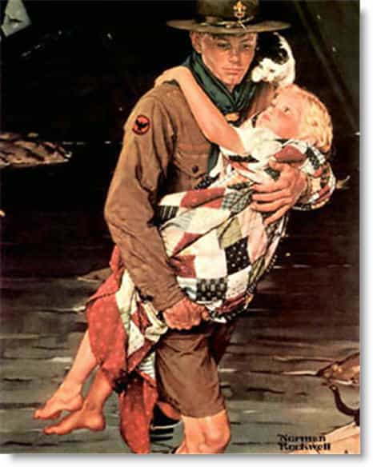
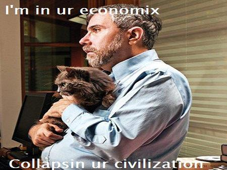

< < < Back
Is Civilization Worth Saving? – Return Of Kings
ROK seems to have been established on the feeling that men are returning to their rightful places in the world. I want to evaluate that title. Many people associate kings with the great civilizations of history. Is this association necessary? Is civilization too often assumed good without a closer look? Civilization is also associated with busy-body bureaucrats, military conscription, unjust institutions, and collectivist tyranny. Is civilization worth saving?
What Is Civilization Good For?
I like to define the good of civilization this way: when father and I go off the ranch to work for a day or two, we expect to return to the women and children taking care of the ranch. We expect most everything to be the same as when we left it. We expect our trip to be profitable. We expect the fruits of our labor to be useful toward our clan and enjoyable for our people. This is civilization to me.
If we returned to our home and it was a smoking ruin, and our clan’s little dead bodies were littered about the ranch, we would not consider this civilization. We would consider this the opposite of civilization.
Extending this concept, when we promise our property or labors in fealty to the strong men who would lend us protection and patronage, we expect the faithful protection they’ve offered in exchange. We expect to be considered a “good guy” when the agents of the Protectorate inspect our activities, and we expect the Protector to be somehow accessible should we request his appeal.
Lastly, when we feel like most of the people around us are generally trustworthy, sharing a common value system which is taught to them by default from birth, we consider this civilization.

When Civilization ATTACKS!
Our current civilization of dehumanization and a reign of managers has led to problems in society. I believe the epitome of this tendency is the Civil Rights Movement. The words “civil rights” so perfectly embodies the evolution from natural rights to the managerial, nanny state tyranny we see today. Civil rights are wholly derived from civilization deciding that it has become more powerful than whatever arrangement it was the civilization was initially found upon. In the West, our civilizations were founded upon Rome, Greece, Christendom, the Renaissance, the Reformation, the Enlightenment, and free markets. This foundation, absent a monarch, is known as classical liberalism.
After the Enlightenment we eventually entered the modern period. The modern period is governed by the managerial mentality: everything in life has a neat little solution that an engineer will be along shortly to remedy. Conservatives in America are actually better described as classical liberals. The real right-wing Conservatives I know are monarchists still pissed off about the French and American Revolutions. Modern liberals came to be called “liberals” through evolution of their original label “social liberal.” This evolution is noticed in the opening chapters of The Road to Serfdom by F.A. Hayek, written in the 1940’s.

Whereas Natural Law was founded upon universal philosophical arguments going all the way back to Aristotle, modern Civil Rights are founded on nothing more than naked utilitarianism asserted by the civil government. What is naked utilitarianism? The economic engineers—the planners—evaluate a problem in society and design a technocratic solution to our problem. There are seldom actual mathematical models calculating “utils” provided to procure the greatest good for the greatest number of people—utilitarians and their voters often just go with their emotional urges to devise and sell the social engineering plans to the masses.
An important step they miss is the definition of “problem.” A utilitarian cannot use utilitarianism to define problems or their scope. The utilitarian is stuck with naked assertions and uninformed assumptions about how things ought to be run in this world, often blowing problems way out of proportion and prescribing overbearing solutions that just cause even more problems. It never strikes them that racism and sexism should be solved by personal moral enlightenment. That’s too slow for progress, and nobody gets a cushy government job in that scheme, so they just bring out the ban hammer and smash away at whatever they perceive as “racism.”
Are you offended that I question civil rights? Ask yourself this: when does the Civil Rights Movement end? When does affirmative action end? When does disparate impact end? When does feminism and political correctness end? Not even the best civil rights advocates can describe such a condition. Not even the utopian dreamers can conceive of their utopia. They are perpetually aggrieved. There will never come a day when some future Nancy Pelosi marches out onto the Floor, throws up her hands, and says “Well, we’re all equal now. Good job, everyone!”
Who Is The Sovereign?
As with all political questions, we always end back up to who is sovereign in this world? Some would say it is the head of State. Some would say it is the scientist. Some would say it is the father. Some would say it is We The People. Feminists want women to be sovereign. Religions establish the Gods or Fates as sovereign. Post modernists ironically muse that there is no sovereignty at all.
ROK seems to fall into the camp that, at least, men are sovereign and need to return to their places. This is a good start, because men are definitely very high within the Great Chain of Being. However, with sovereignty come some ugly realities. Male sovereignty means male responsibility. Yikes! The manosphere is full of men who have no interest in civilization, society, or The Great Chain of Being. And I don’t really blame them. Studying the great Philosopher Kings of our past also reveals that even the great sovereigns themselves can often feel lost in this world of vanity and the chasing after winds; his is a hard-fought order which will probably come to ruin when the next man takes the crown; his is a house full of crap he’s collected which he can’t take into the next life anyways.
Literacy and Laziness
One thing I didn’t mention that is good about civilization is literacy. If it weren’t for civilization, I would not be able to sit here and cite Aristotle and Natural Law in a discussion freely read by people all over the world right now. If not for our Western civilization, I would probably right now be writing yet another poem about how great Muhammed is. However, I have to admit that so-called art in my modern and post-modern civilization is far worse than reading through the hadith or Leviticus. Leviticus may put me to sleep, but at least it doesn’t make me want to murderously scratch my eyes out, like modern art or womyn’s studies does. Our civilization is marred by obesity, drug addiction, and hubris. So is civilization worth saving? Should we fear its demise? Whom shall I fear?
Read Next: Why Modern Feminism Is White Woman’s Privilege


{kind=link}
{kind=link}
{kind=link}